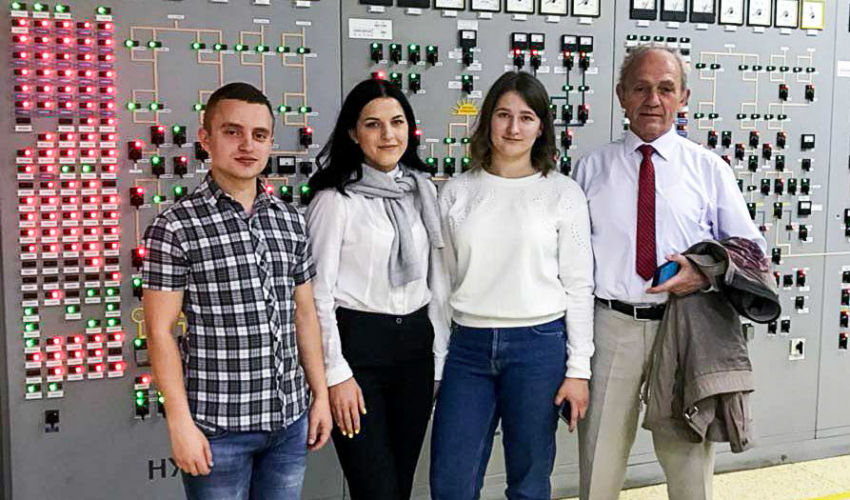

Політехніки здобували досвід на АЕС: четвертокурсники ІЕСК стали випускниками літньої ядерної школи
Троє студентів четвертого курсу кафедри теплоенергетики, теплових та атомних електричних станцій стали випускниками літньої ядерної школи. Йдеться про щорічний двотижневий захід, який провадять на базі електростанції, цьогоріч – на Хмельницькій АЕС. Організовує школу Державне підприємство Національна атомна енергогенеруюча компанія «Енергоатом». Серед учасників – студенти, аспіранти та викладачі, які спеціалізуються на напрямі «атомна енергетика» – близько трьох десятків представників технічних вишів з України (Києва, Одеси, Вінниці, Харкова, Львова) та Чехії. Нагода представляти Львівщину і Політехніку випала Катерині Золотарьовій, Марії Кузміч та Владиславові Пампушику.